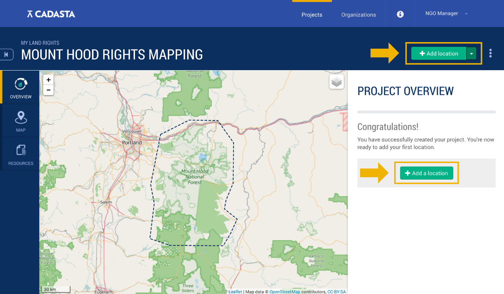
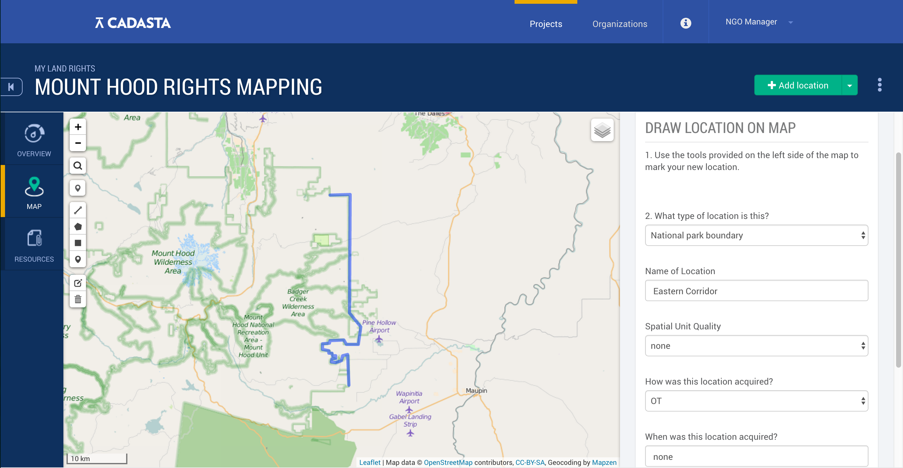
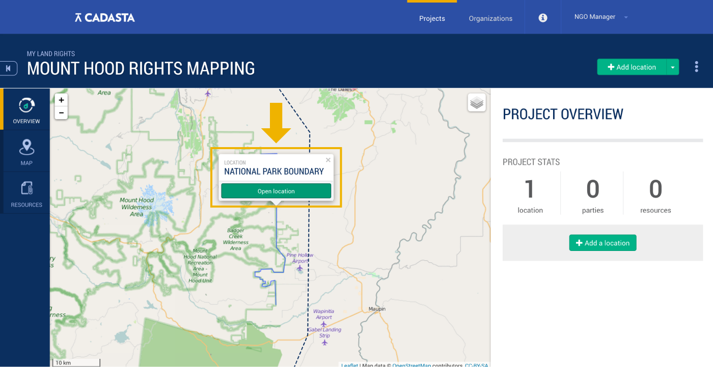
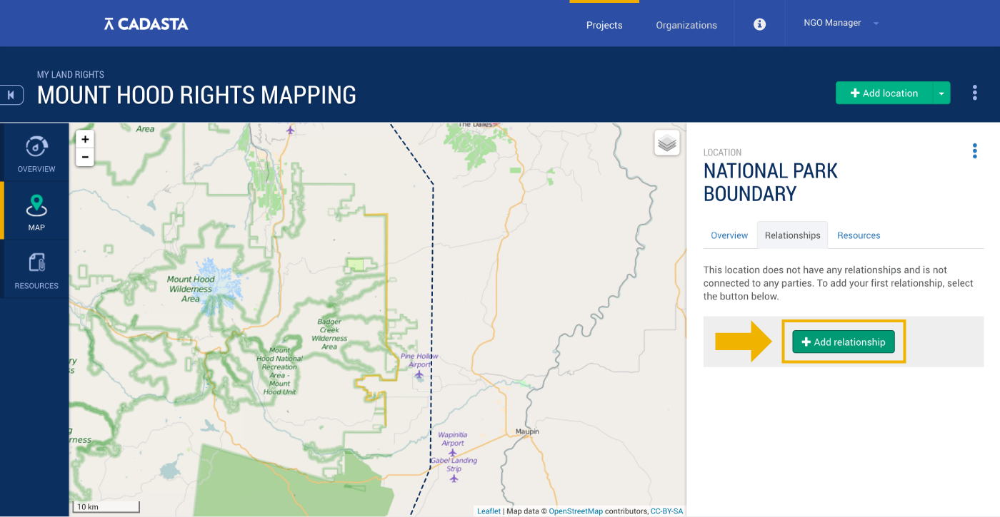
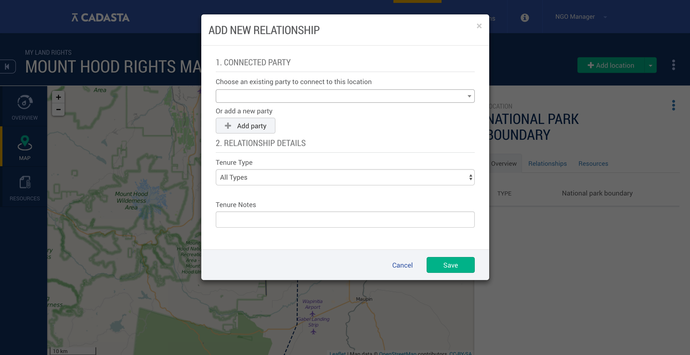
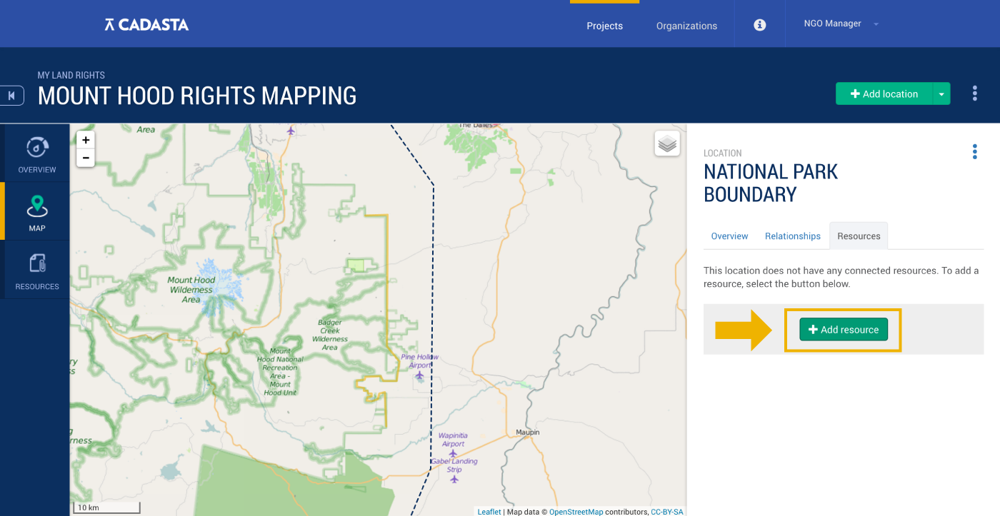
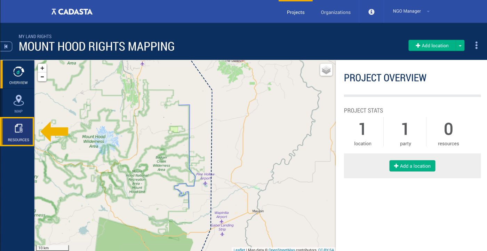
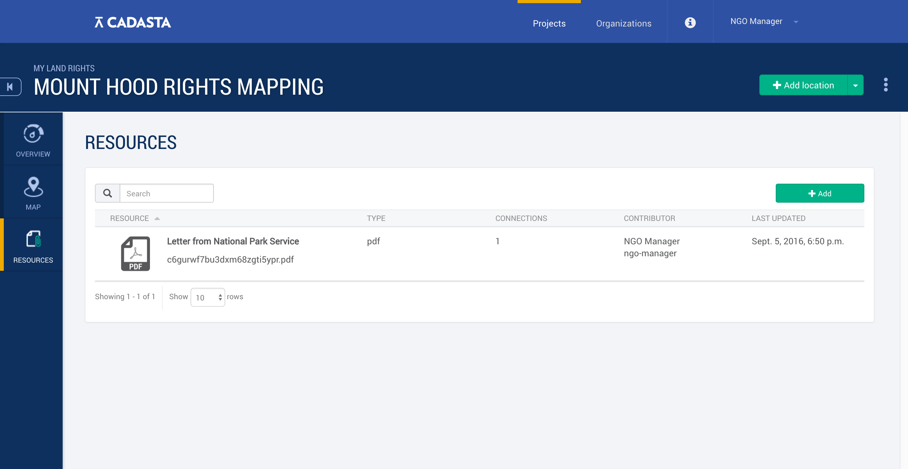

Project Records: Locations, Parties, Relationships, and Resources
- Overview
- Project Locations, Location Types, and Location Acquisition
- Parties and Their Relationship to a Location
- Resources
Overview
Within any given project, you may be working with lots of different locations. For example, within a forested area, there may be a national park boundary as well as a building that you'll need to track.
Each of these locations may have a relationship with one or more parties. For example, a park may be owned by the government, but a community group may have special access to it. Each of these parties has their own relationship to that bit of land. That relationship is known as their tenure. There are often many resources to track this, like photos, letters, and deeds.
The Cadasta Platform is designed to deal with this complexity. This section outlines how the Platform handles tracking locations, parties, relationships, and all the resources that go with them.
Project Locations, Location Types, & Location Aquisition
Adding a Location
From the main project page, select either Add location or Add a location:

On the next page, you'll be asked to draw your location on the map as a point, line, polygon, or rectangle.

Here, you'll also be asked to provide some information about your location (shown on the right). If you're using the minimum questionnaire , you'll just need to indicate the type of location.
If you're using the standard questionnaire, you'll be asked to specify the following (as shown above):
- Location type
- Name of Location
- Spatial Unit Quality
- How Location was Acquired,
- When the location was acquired, and
- Location Notes.
When you're done, save your location.
To access this location, click on it from the main project page.

Location Types
Location types define the type of location you're uploading. The following are defined in the standard questionnaire:
- Parcel - a plot of land.
- Community Boundary - a formal or informal boundary between two groups of people.
- Building - any kind of structure.
- Apartment - an apartment or apartment building.
- Project Extent - the full boundary of the project.
- Right-of-Way - an easement that allows a person or group of people to pass throuh another's land.
- Utility Corridor - a passage, either overground or underground, meant to carry utility lines like electricity and water.
- National Park Boundary - the boundary between a national park and another kind of land.
- Miscellaneous - another kind of location that doesn't fit into any of your categories.
To change the location types that you're using, edit your questionnaire.
Location Acquisition
If you're using the standard questionnaire for your data collection, you'll be asked to define how your location was acquired. You can choose from one of the following categories:
- CS - Contractual Share Crop
- CA - Customary Arrangement
- GF - Gift
- HS - Homestead
- IO - Informal Occupant
- IN - Inheritance
- LH - Leasehold
- PF - Purchased Freehold
- RN - Rental
- OT - Other
Parties and Their Relationship to a Location
Parties
Parties are the individuals, groups or corporations who have a relationship to one or more of the locations in your project.
Individuals are single people, like a landowner or lessee.
Groups are collections of people who may not have an officially documented organization, such as a tribe, community group or family.
Corporations are organizations like companies, NGOs, or government bodies.
Relationships
Any given location has a relationship to a number of parties. For example, a municipality may own a utility corridor, which a local community may use as a right-of-way.
Adding a New Relationship
To add a new relationship for a project location, clik on the Relationships tab. Then, click on Add relationship.

In the pop-up that follows, you'll be first asked to either choose from an existing party or add a new one.

If you're adding a new one, you'll need to provide:
- Party name,
- Party type (individual, group, or corporation), and
- Party notes.
Next, you'll be asked to add relationship details: including the tenure type and notes about the tenure.
When you're done adding notes about the relationship, click save.
Tenure Type
Tenure type refers to the type of ownership or right that a party may have with regards to a location. In the Cadasta Platform, you can define a party's tenure type in a variety of ways.
- Carbon Rights
- Concessionary Rights
- Customary Rights
- Easement
- Equitable Servitude
- Freehold
- Grazing Rights
- Hunting / Fishing / Harvest rights
- Indigneous Land Rights
- Joint Tenancy
- Leasehold
- Longterm Leasehold
- Mineral Rights
- Occupancy (No documented rights)
- Tenancy (Documented Sub-Lease)
- Tenancy in Common
- Undivided Co-Ownership
- Water Rights
To learn more about many of these terms, see the glossary from Focus on Land in Africa.
Resources
Land rights projects can come with all kinds of documentation - like legal documents, letters, pictures and more. Some of that documentation may relate to multiple locations within a project, or to one location, or it may just relate to the project in general.
The Cadasta Platform is set up to handle this kind of complexity, organizing resources into three different types:
- Resources pertaining a specific location,
- Resources pertaining to a party, and
- Resources pertaining to the project generally.
Adding a New Resource
There are a few ways to add a new resource, depending on what it pertains to.
If you're adding a project location resource, select the Resources tab from the location overview page, and then Add resource.

To add a resource that pertains to a certain party, go to the Relationships tab from the location overview page. Then, select the party you'd like to add a resource for.

At the bottom of that party's page, select the Attach button and upload your resource.

To add a resource that pertains to the overall project, go to the project's overview page by clicking Overview. Then, click Resources.

Clicking on resources from the project overview page will take you to your project library, which will have all of the resources related to your project.

To add a resource while you're in the the library, click Add on the upper right.
From any of these starting points, you'll be led to a pop-up window. Here, you'll be asked to upload a file, and give it a name and description.
Acceptable file types are:
- .mp3
- .mp4
- .doc
- .docx
- .jpg
- .png
- .gif
- .tiff
- .xls
- .xlsx
- .xml (This file type is particularly useful if you need to upload a .gpx document; just change the file extension from .gpx to .xml)